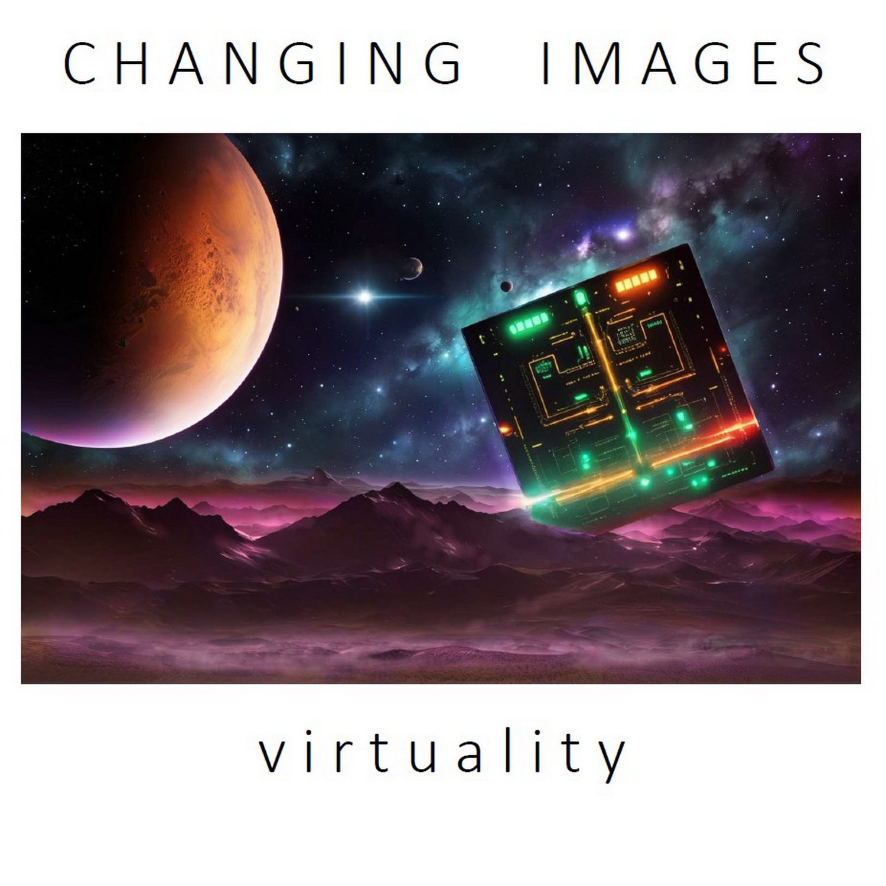

1991 · Debut album
The Castle
A first journey through electronic and symphonic landscapes.
Explore the albumSelected works
A first journey through electronic and symphonic landscapes.
Explore the album
Sequencer lines, electronic elements and a world of its own.
Explore the album
A musical interpretation of dreams as gateways to other worlds.
Explore the album
A search for extraterrestrial intelligence through sound.
Explore the album